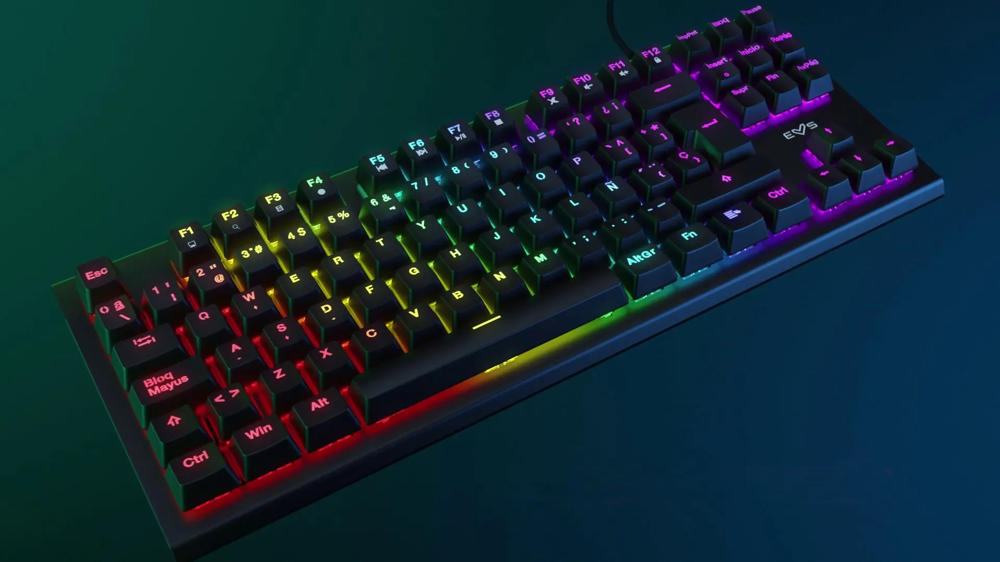
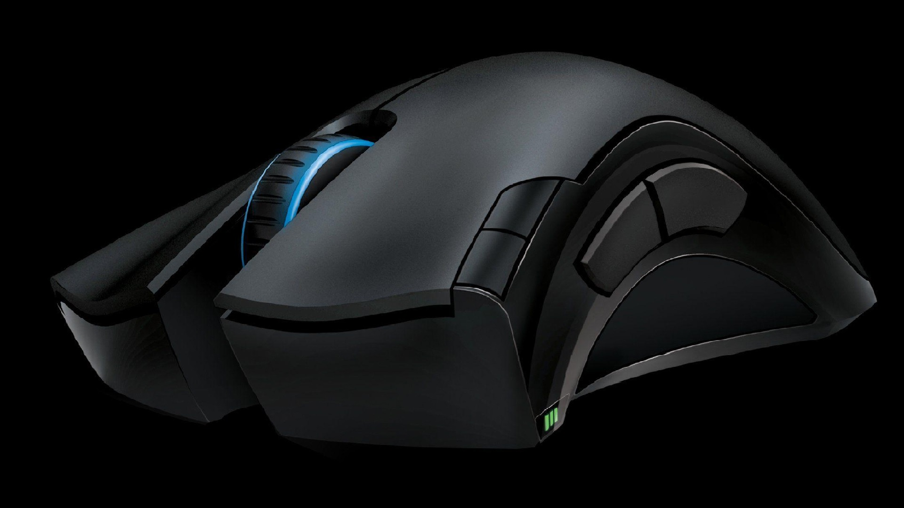
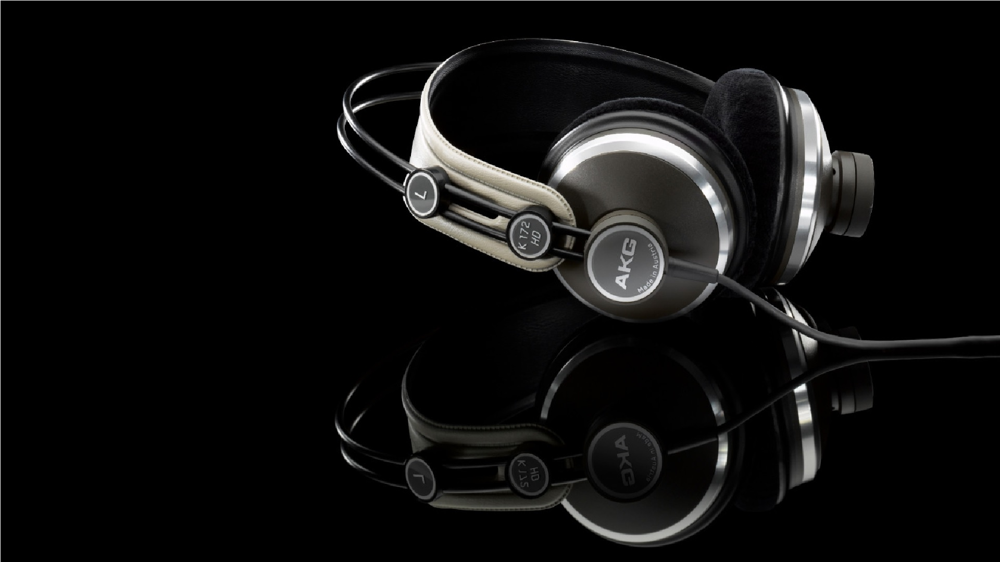
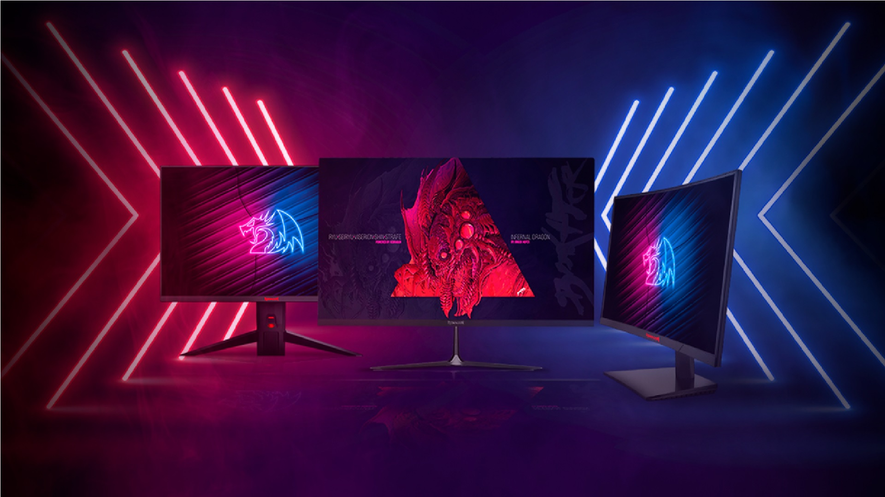
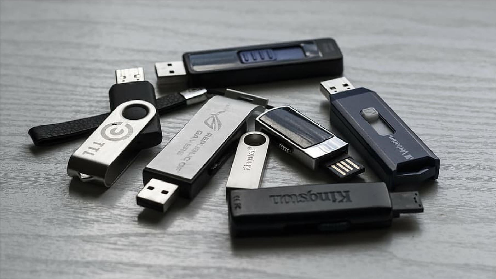
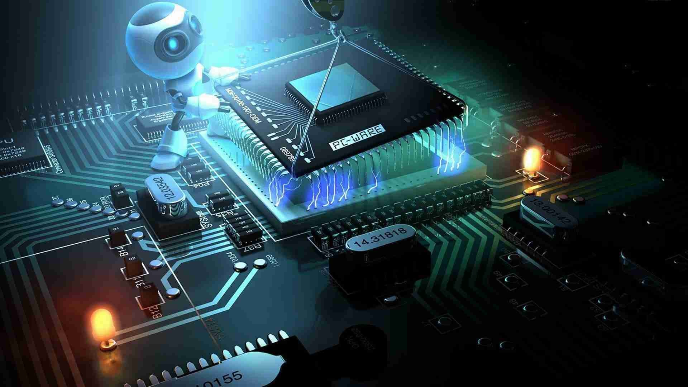
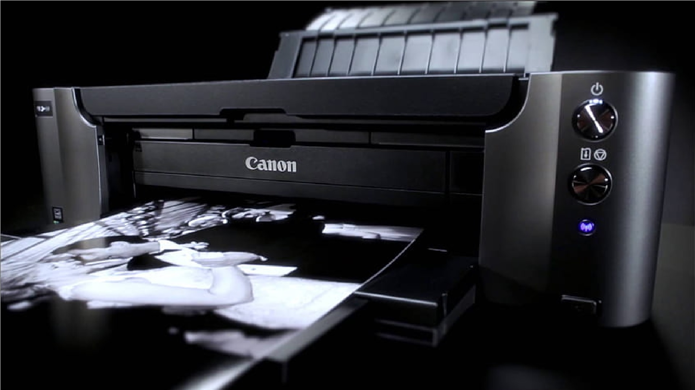
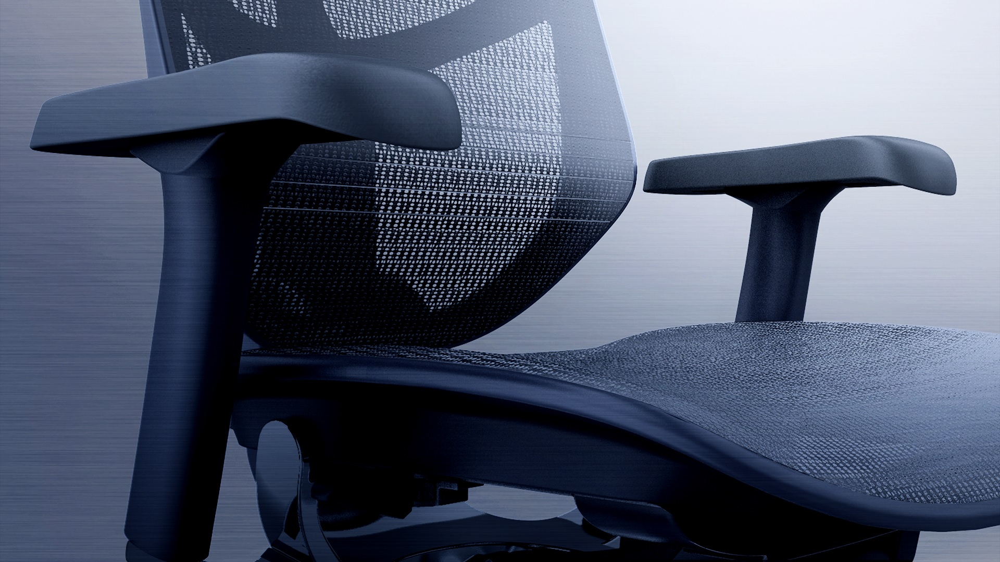

Accesorios de computadora de todo tipo
En iGadget, nos apasiona llevar tu experiencia tecnológica al siguiente nivel. Somos una tienda especializada en ofrecerte una amplia gama de accesorios y dispositivos para computadoras y otros dispositivos electrónicos. Nuestro objetivo es brindarte la solución perfecta para potenciar tus actividades diarias, ya sea en tu hogar, oficina o en movimiento.
Encontrarás una selección cuidadosamente curada de productos de alta calidad, desde teclados ergonómicos y precisos, hasta mouses de última generación con características avanzadas. Si buscas una experiencia de audio inigualable, descubre nuestros auriculares de alta fidelidad que te sumergirán en un sonido envolvente. Además, ofrecemos una variedad de monitores de primera línea para disfrutar de imágenes nítidas y colores vibrantes en tus tareas o en tus momentos de entretenimiento.
Sabemos que cada persona tiene necesidades y preferencias únicas, por lo que en iGadget nos esforzamos por brindarte opciones variadas que se adapten a tus requerimientos. Nuestro equipo de expertos en tecnología está siempre dispuesto a asesorarte y ayudarte a encontrar el accesorio perfecto que mejore tu productividad, rendimiento y comodidad.
la calidad y la satisfacción del cliente son nuestra máxima prioridad. Trabajamos con los principales fabricantes y marcas reconocidas del mercado para garantizar que nuestros productos cumplan con los más altos estándares. Además, ofrecemos una experiencia de compra segura, envíos rápidos y un servicio al cliente excepcional para brindarte la tranquilidad que mereces.
iGadget: Llevando tu experiencia tecnológica al siguiente nivel. Ofrecemos una amplia gama de accesorios y dispositivos de calidad para computadoras y dispositivos electrónicos. Encuentra teclados ergonómicos, mouses avanzados, auriculares de alta fidelidad y monitores de primera línea. Nuestro objetivo es brindarte soluciones que mejoren tu productividad y comodidad. Priorizamos la calidad, satisfacción del cliente y una experiencia de compra segura. En iGadget, tu experiencia tecnológica es nuestra pasión.
Teclados
Experimenta la comodidad y precisión en cada pulsación. Desde teclados mecánicos de alto rendimiento hasta modelos inalámbricos y compactos, ofrecemos una variedad de opciones para adaptarse a tus necesidades. Mejora tu experiencia informática con teclas sensibles y retroiluminación cautivadora. Encuentra el teclado perfecto para tu estilo de vida en iGadget y lleva tu productividad al siguiente nivel.
Ver ProductosMouses
Experimenta el control preciso y la ergonomía excepcional en cada movimiento. Desde mouses ópticos básicos hasta modelos inalámbricos y ergonómicos, ofrecemos una variedad de opciones para adaptarse a tus necesidades. Mejora tu experiencia informática con un mouse cómodo y sensible que se ajuste a tu estilo de trabajo. Encuentra el mouse perfecto para aumentar tu productividad en iGadget y disfruta de un control sin igual en tus tareas diarias.
Ver ProductosAuriculares
. Descubre una experiencia auditiva inigualable con auriculares diseñados para brindar un sonido cristalino y una comodidad duradera. Desde auriculares inalámbricos con cancelación de ruido hasta auriculares deportivos resistentes al agua, ofrecemos una variedad de opciones para adaptarse a tu estilo de vida y preferencias. Disfruta de la libertad de movimiento sin cables enredados y sumérgete en tu música, películas y juegos favoritos con una claridad y nitidez excepcionales.
Ver ProductosMonitores
Sumérgete en imágenes nítidas y colores vibrantes con nuestros monitores de alta resolución. Desde monitores panorámicos para una experiencia inmersiva hasta modelos ultradelgados para ahorrar espacio, ofrecemos una variedad de opciones para satisfacer tus necesidades y preferencias. Mejora tu productividad, disfruta de juegos envolventes o sumérgete en contenido multimedia con la claridad y el rendimiento excepcionales de nuestros monitores.
Ver ProductosAlmacenamiento
Mantén tus archivos, documentos y medios digitales seguros y accesibles con nuestra gama de opciones. Desde unidades flash USB compactas y portátiles hasta discos duros externos de alta capacidad, ofrecemos una variedad de soluciones para satisfacer tus necesidades de almacenamiento. Respalda tus datos importantes, lleva contigo tus archivos dondequiera que vayas y organiza tu información de manera eficiente. Encuentra el dispositivo de almacenamiento perfecto para simplificar tu vida digital y mantener tus datos protegidos.
Ver ProductosHardware
Maximiza el rendimiento de tu sistema con los componentes más avanzados y confiables. Desde procesadores de alta velocidad hasta placas madre de vanguardia, placas de video de alto rendimiento y memorias RAM de última generación, ofrecemos una variedad de opciones para potenciar tu experiencia informática. Construye tu propia máquina personalizada o actualiza tu sistema existente para alcanzar nuevos niveles de velocidad y eficiencia. Encuentra los elementos de hardware perfectos que te permitirán ejecutar aplicaciones exigentes, disfrutar de juegos inmersivos y trabajar de manera fluida.
Ver ProductosImpresoras
Desde impresoras láser de alta velocidad hasta impresoras de inyección de tinta de calidad fotográfica, ofrecemos una variedad de opciones para satisfacer tus necesidades de impresión. Imprime documentos nítidos, gráficos vibrantes y fotografías de alta resolución con facilidad. Ya sea para uso doméstico, oficina o profesional, encontrarás la impresora perfecta que se adapte a tus requerimientos.
Ver ProductosSillas
Diseñadas pensando en la ergonomía y el apoyo adecuado, nuestras sillas te brindarán una experiencia de asiento inigualable. Ya sea para largas sesiones de juego o para jornadas de trabajo prolongadas, nuestras sillas te ofrecen el máximo confort y soporte para tu espalda y cuerpo. Con diseños modernos, materiales de alta calidad y ajustes personalizables, nuestras sillas se adaptarán perfectamente a tus preferencias y necesidades.
Ver Productos